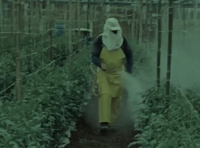
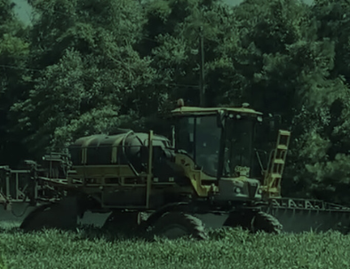
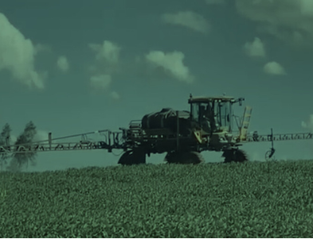

As principais categorias de agrotóxicos, também conhecidos como pesticidas, são substâncias químicas utilizadas na agricultura para controlar pragas, doenças e ervas daninhas que afetam as plantações. Eles podem ser classificados em várias categorias, cada uma com propriedades e efeitos específicos.

Utilizados para controlar plantas daninhas. Ex: Glifosato, 2,4-D.
Utilizados para controlar doenças fúngicas. Ex: Sulfitos de cobre, Triazóis.
